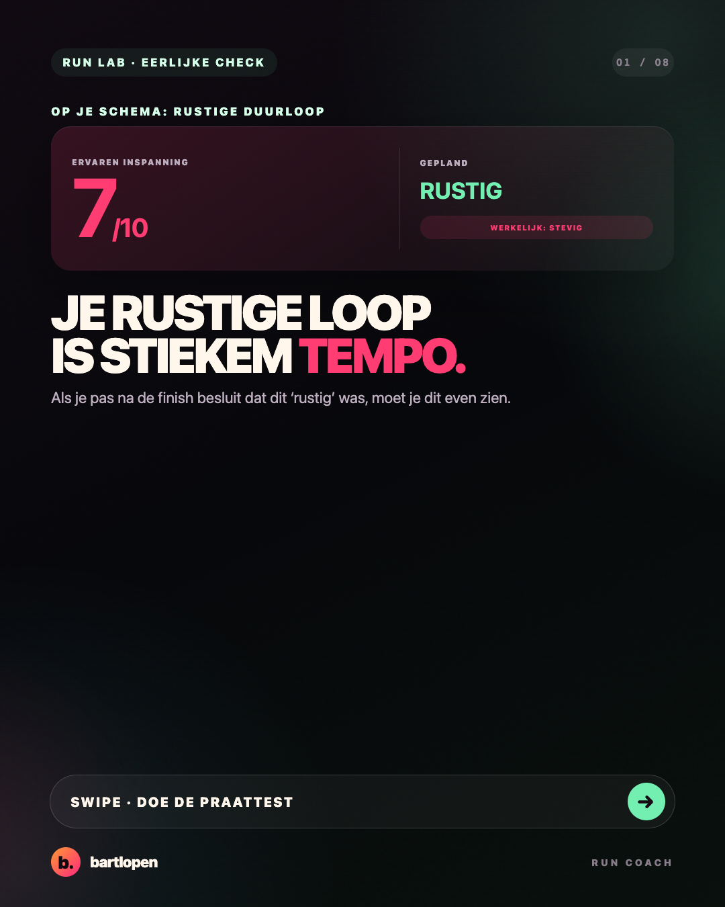
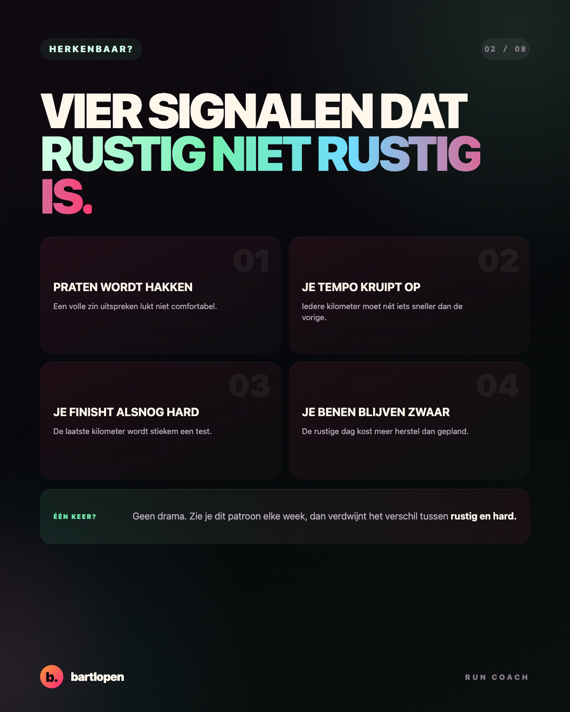
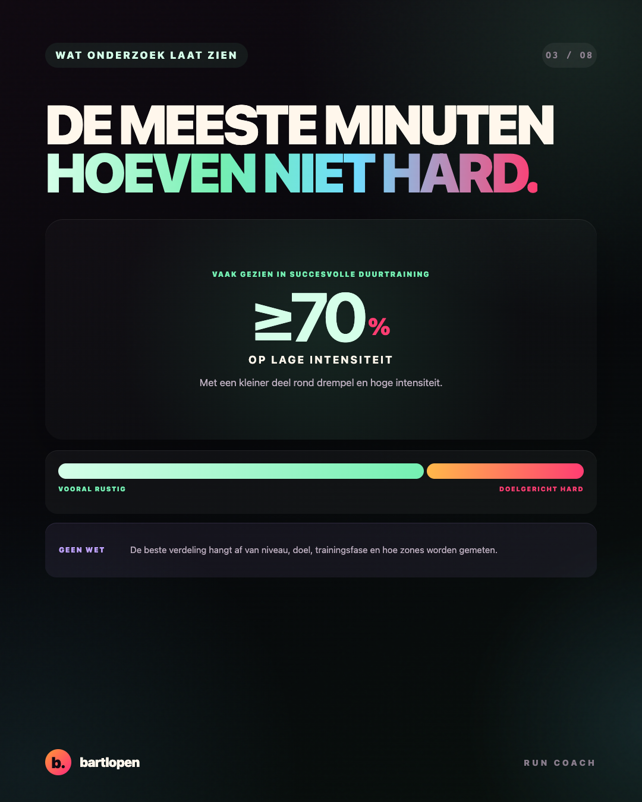
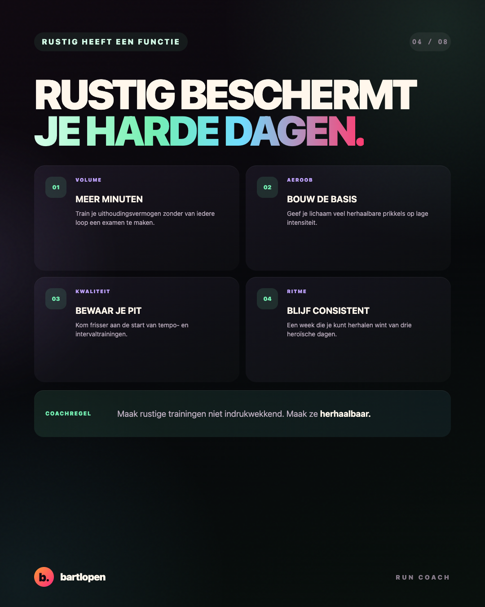
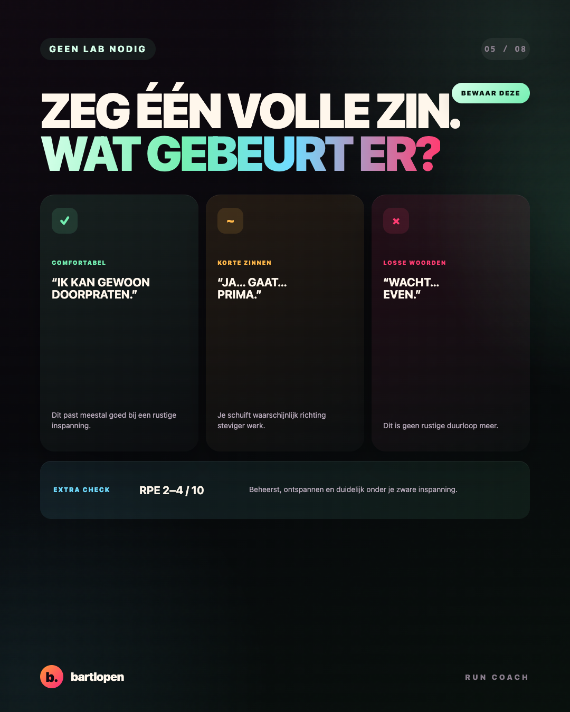
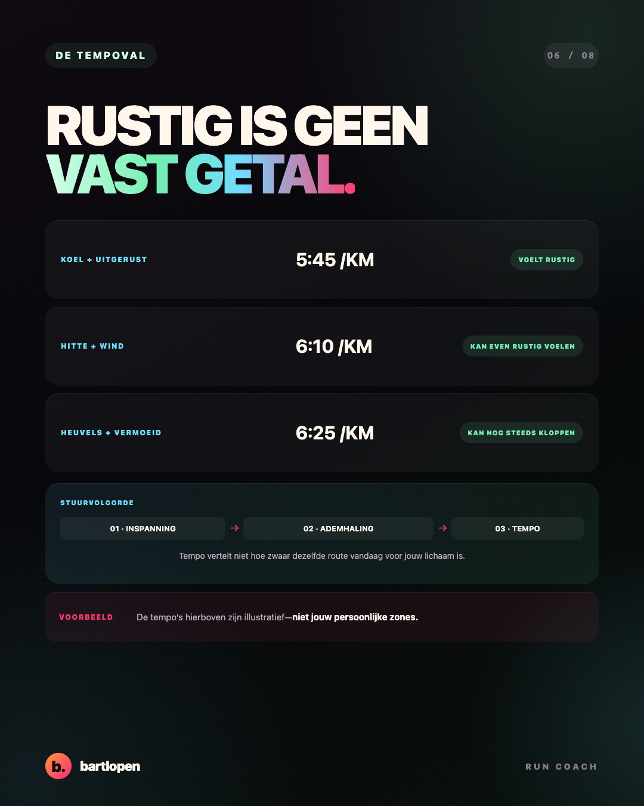
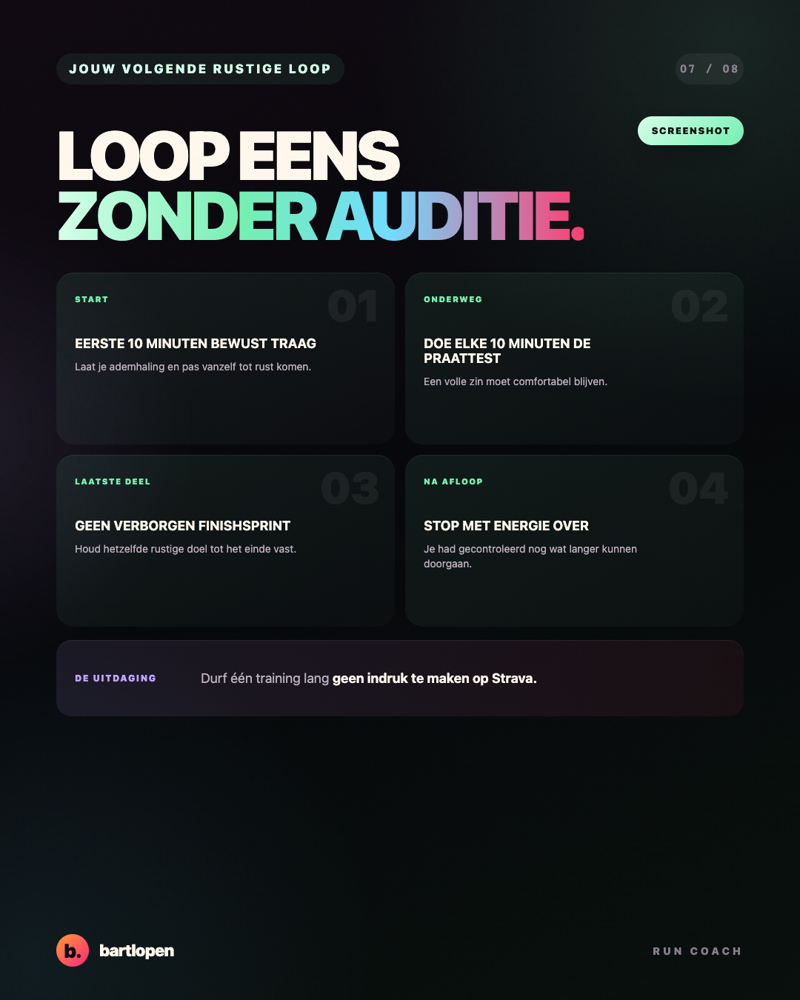
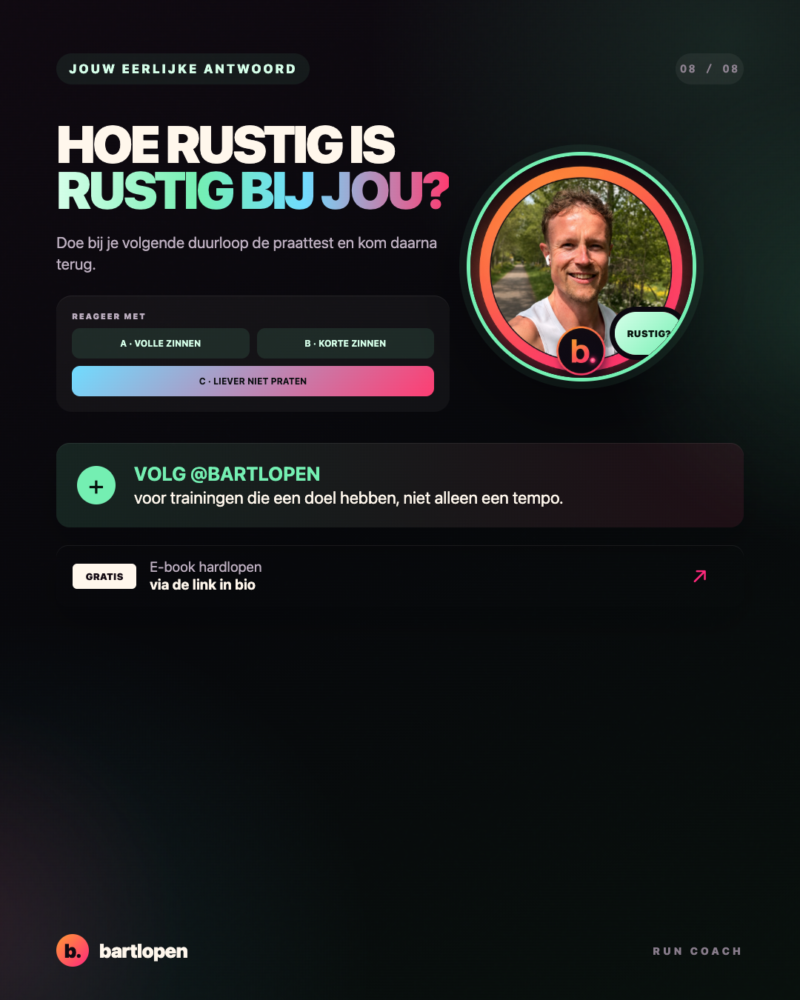

SLIDE 01 ↗Je rustige loop
gaat te hard
Acht premium slides over lage intensiteit, de praattest en waarom een rustige training geen auditie voor Strava is. Gebouwd in 4:5-formaat voor Instagram en TikTok Photo Mode.

SLIDE 02 ↗
SLIDE 03 ↗
SLIDE 04 ↗
SLIDE 05 ↗
SLIDE 06 ↗
SLIDE 07 ↗
SLIDE 08 ↗Caption
JE RUSTIGE LOOP IS GEEN AUDITIE. 👀 Als je na elke ‘rustige’ duurloop vooral blij bent dat je gemiddelde tempo tóch best snel was, dan was rustig misschien niet je doel. Je Strava-tempo wel. Een rustige training heeft een functie: genoeg trainen zonder je tempo- en intervaldagen vooraf leeg te trekken. Mijn simpele check: 🗣️ Kun je een volle zin comfortabel uitspreken? 😮💨 Voelt het als ongeveer 2–4 op 10? 🏁 Kun je stoppen zonder verborgen eindsprint? 🔋 Heb je na afloop nog gecontroleerd energie over? Warmte, wind, heuvels en vermoeidheid maken je tempo trager zonder dat de training minder goed wordt. UITDAGING: loop deze week één training expres rustiger dan je ego leuk vindt. Kun jij tijdens je rustige loop A: volle zinnen, B: korte zinnen of C: liever niet praten? 👇 #hardlopen #rustigeduurloop #runningtips #runcoach #strava #training #bartlopen
Bronnen: systematische review naar intensiteitsverdeling bij middellange- en langeafstandslopers, netwerkmeta-analyse naar intensiteitsverdeling bij duursporters en experimenteel onderzoek naar de praattest als intensiteitssturing.